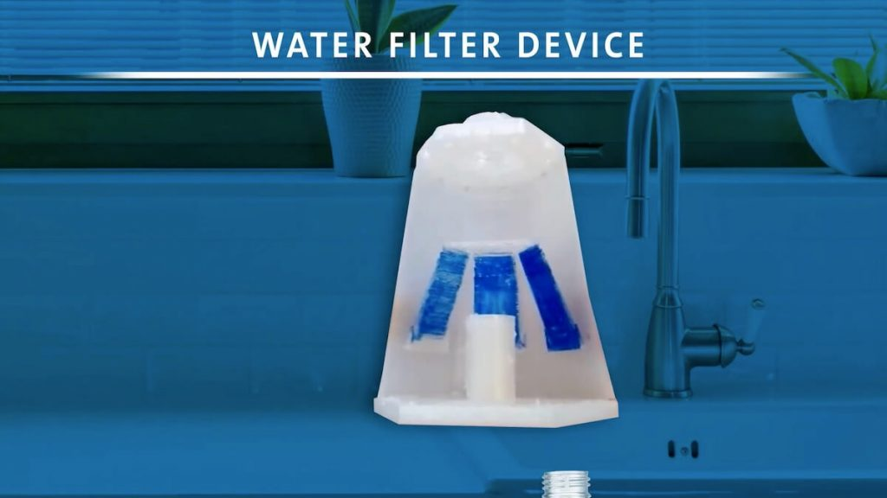
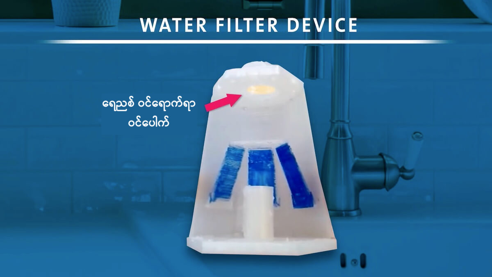
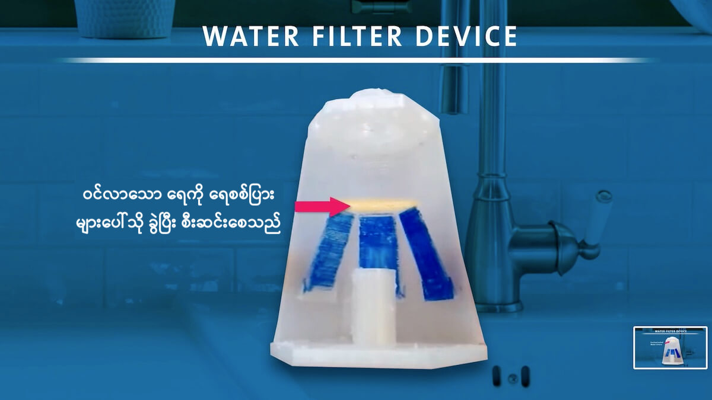
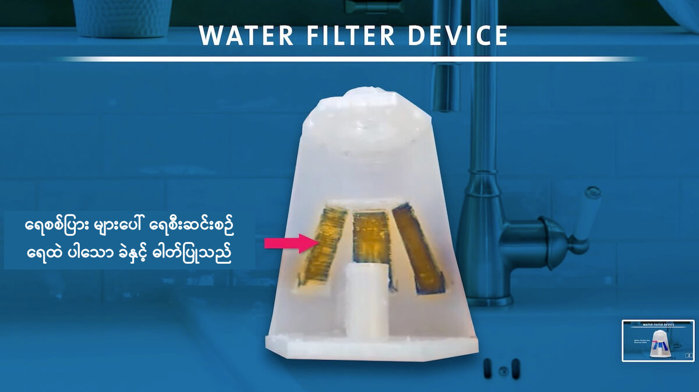
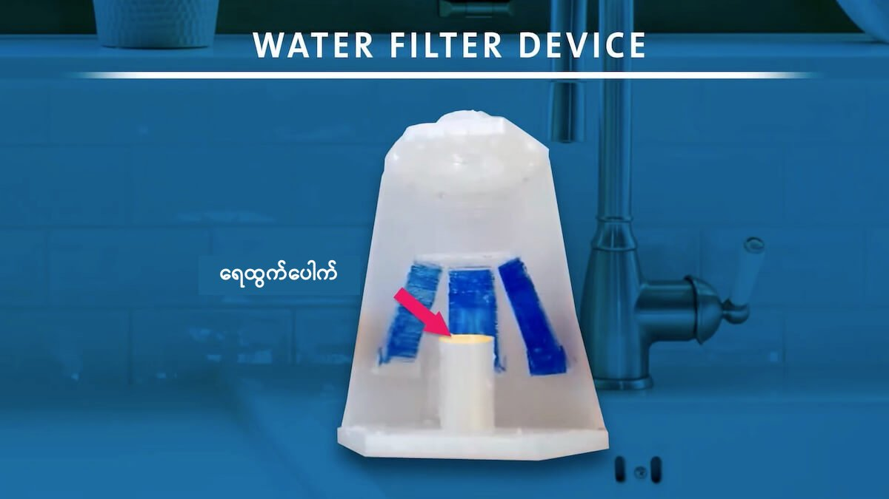
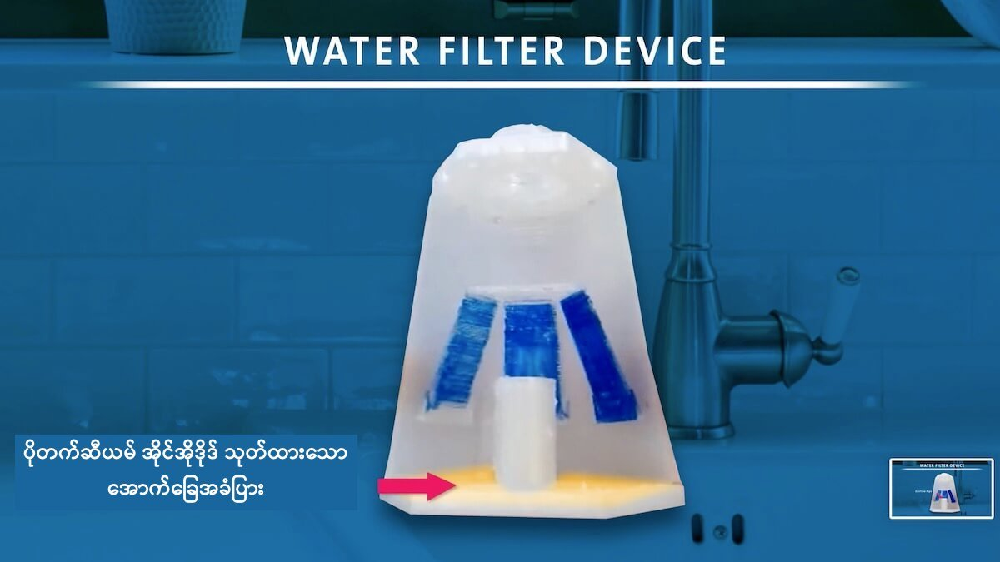
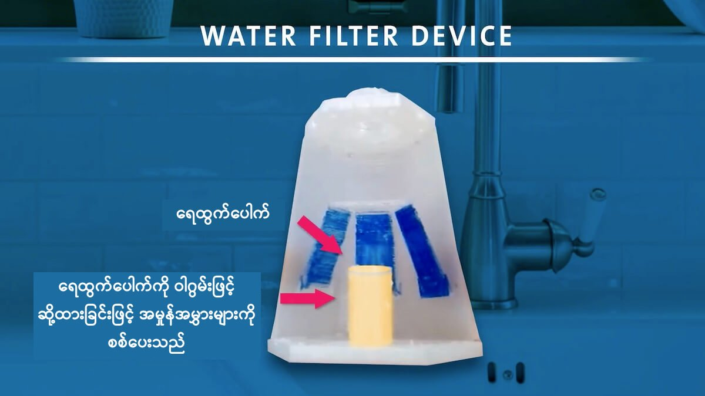

ဒီ ခဲဆိပ်စစ် ရေစစ်ဟာ လက်ရှိ ဈေးကွက်မှာ ရောင်ချနေတဲ့ ခဲဆိပ်ကို စစ်ထုတ်ပေးနိုင်တဲ့ ရေစစ်တွေထက် အများကြီး ဈေးသက်သာ ပါတယ်။ ဒီလို ဈေးသက် သာတဲ့အပြင် ဒီရေစစ် သက်တမ်း ကုန်သွားလို့ အသစ်လဲရမယ့် အချိန်မှာ သတိပေးမယ့် စနစ်ကိုလဲ ထည့်သွင်း တည်ဆောက် ထားပါသေးတယ်။
အမေရိကန် ပြည်ထောင်စု တစ်ခုတဲမှာတင် ခဲဓါတ်ပါတဲ့ ရေပိုက်တွေက ရေကို သောက်သုံး နေ ရသူပေါင်း ၆ သန်းက ၁၀ သန်း အထိ ရှိမယ်လို့ ဆိုပါတယ်။ ဒီ ရေထဲကို ပိုက်က ခဲတွေ ပျော်ဝင်ပြီး ခဲဆိပ်သင့်ခြင်း ဖြစ်နိုင်တဲ့ အန္တရာယ် ရှိပါတယ်။
ခဲဟာ လူကိုယ်ထဲ ဝင်သွားရင် အဆိပ်အတောက် ဖြစ်စေ နိုင်ပါတယ်။ ခဲပါတဲ့ ရေ (သို့) အစားအစာ တွေကို စားသုံးမိရင် နှလုံး၊ ကျောက်ကပ် နဲ့ မျိုးပွား အင်္ဂါတွေကို ထိခိုက်စေ နိုင်ပါတယ်။

လက်ရှိ နိုင်ငံ အတော် များများမှာ ခဲပါတဲ့ ပိုက်တွေကို ရေသွယ်ဖို့ အသုံးပြုတာကို ကန့်သတ် လာကြပါတယ်။ လက်ရှိ ရှိရင်းစွဲ ပိုက်တွေကိုလဲ ခဲမပါတဲ့ ပိုက်တွေနဲ့ လဲလှယ်ဖို့ ကြိုးစားနေ ကြပေမယ့် ဒီလို လဲလှယ်နိုင်ဖို့ ဆိုတာက အချိန် အများကြီး ကြာမှာ ဖြစ်ပါတယ်။
ဒီ ပြဿနာကို ဇြေရှင်းနိုင်ဖို့ ရေသန့်ဖြစ်အောင် စစ်ပေးနိုင်တဲ့ ရေစစ်တွေ ရှိပေမယ့် ဒီ ရေစစ်တွေဟာ ဈေးကြီးပါတယ်။ အရွယ်အစား ကလဲ ကြီးမားပြီး ဘယ်အချိန် ရေစစ်ရဲ့ သက်တမ်းကုန်သွားလို့ အသစ် လဲရမလဲဆိုတာကိုလဲ အလွယ်တကူ မသိနိုင် ပါဘူး။
အခု ရေစစ်ကို ထွင်တဲ့ ကလေးတွေရဲ့ သိပ္ပံ ဆရာမ ဖြစ်သူ Rebecca Bushway က ဒီရေစစ် ထွင်ဖြစ်တာနဲ့ ပါတ်သက်လို့ ပြန်ပြောင်း ပြောပြပါတယ်။
“လွန်ခဲ့တဲ့ နှစ်အနည်းငယ်က တီဗီမှာ အမျိုးသမီး တစ်ယောက် ရေဖွင့်လိုက်တော့ ရေ ညိုညိုရောင်တွေ ထွက်လာတာ တွေ့လိုက်ရ ပါတယ်။ ဒီတော့ ကျွန်မ စဉ်းစား မိတာက အကယ်လို့ ရေထဲမှာ ခဲပါမပါ အလွယ်တကူ သိနိုင်မယ့် နည်းလမ်း မရှိဘူးလား ဆိုတာကိုပေါ့။ ရေတွေ အညိုရောင် ပြောင်းမသွားခင် ခဲပါမပါ ကြိုသိနိုင်မယ့် နည်းလမ်း ရှိမလား ဆိုတာ စဉ်းစားမိ ပါတယ်။”
သူမက မေရီလင်း ပြည်နယ် ဘယ်ရီ အလယ်တန်းနှင့် အထက်တန်းကျောင်း (Barrie Middle and Upper School) က ကျောင်းဆရာမ တစ်ဦး ဖြစ်ပါတယ်။
၂၀၂၀ ခုနှစ်မှာ ဆရာမ ရေဘက်ကာ ဟာ သူ့ ဓါတုဗေဒ ကျောင်းသားတွေနဲ့ ဒီကိစ္စကို ဆွေးနွေး ဖြစ်ခဲ့ပါတယ်။ အဲ့သည် အချိန်က ကိုးဗစ် ကာလမို့ ကျောင်းသားတွေ အိမ်က ကျောင်းတက်နေ ကြတဲ့ အချိန်ပါ။ ကျောင်းသား တွေဟာ အိမ်ကပဲ ဒီ ပြဿနာကို စဉ်းစားခဲ့ကြပါတယ်။
အခြေအနေ ကောင်းလာလို့ ကျောင်းပြန် တက်တဲ့ အခါကျတော့ သူမရဲ့ ကျောင်းသား တွေဟာ သူတို့ရဲ့ အကြံကို လက်တွေ့ စမ်းသပ်ကြည့် ကြပါတယ်။ 3D စက်နဲ့ ရိုက်နှိပ်ထားတဲ့ ရေသန့် ရေစစ် ဘူးခွံကို ကွန်ပြူတာနဲ့ ထုတ်လုပ်ကြည့် ကြပါတယ်။ ဒီ ရေစစ် ဘူးခွံကို ရေပိုက်ခေါင်းမှာ တပ်ဆင်နိုင်အောင် ပုံစံထုတ် ထားပါတယ်။
ဒီ ရေစစ်ရဲ့ အထဲကို ကယ်လ်ဆီယံ ဖော့စဖိတ် (Calcium phosphate) နဲ့ ပိုတက်ဆီယမ် အိုင်အိုဒိုဒ် (potassium iodide) တွေ ထည့်လိုက်ပါတယ်။
ကယ်လ်ဆီယံ ဖော့စဖိတ်က ရေထဲမှာ ပါတဲ့ ခဲ (lead) ကို ဆွဲဖမ်း ထားလိုက်ပါတယ်။ ဒီဖြစ်စဉ်မှာ ဘေးထွက် ပစ္စည်း အနေနဲ့ ကယ်လ်ဆီယံ တွေ အပို ထွက်လာပါတယ်။ ခဲက ဖော့စဖိတ် နဲ့ ပေါင်းပြီး lead phosphate ဖြစ်သွားပါတယ်။
ကယ်လ်ဆီယံဟာ လူကို အန္တရာယ် မဖြစ်နိင်ပဲရေမှာလဲပျော်ဝင် နိင်ပါတယ်။ ဒါ့ကြောင့် ကယ်လ်ဆီယံတွေ ရေမှာ ပျော်ဝင် ပါသွားပြီး lead phosphate တွေက ရေစစ်ထဲ ကျန်ခဲ့ပါတယ်။
တဖြည်းဖြည်း ရေစစ်ထဲ ထည့်ထားတဲ့ ကယ််ဆီယမ် ဖော့စဖိတ် ကုန်သွားတဲ့ အခါ ရေထဲက ခဲကို စစ်ထုတ်ပေး နိုင်စွမ်း မရှိတော့ ပါဘူး။ ဒီ အခါ ခဲက ရေစစ်ရဲ့ အောက်ခြေမှာ ထည့်ထားတဲ့ ပိုတက်ဆီယမ် အိုင်အိုဒိုဒ်နဲ့ ဆက်ပြီး ဓါတ်ပြုပါတယ်။
ဒီလို ဓါတ်ပြုလို့ ထွက်လာတဲ့ ဒြပ်ပေါင်းဟာ အဝါရောင် ရှိပါတယ်။ ဒါ့ကြောင့် ရေစစ်က ထွက်တဲ့ အရောင်ဟာ အဝါရောင် ဖန့်ဖန့် ဖြစ်လာရင် ရေစစ်ရဲ့ သက်တမ်း ကုန်သွားပြီ အသစ်လဲရ တော့မယ် ဆိုတာ သိနိုင်ပါတယ်။
ဒီ ရေစစ် အောင်မြင်ဖို့ စမ်းသပ်မှု ၁၀ ကြိမ် မက ပြုလုပ်ခဲ့ ကြရပါတယ်။ အခုအချိန်မှာတေု့ ကျောင်သားတွေ လက်ထဲမှာ တကယ် အလုပ်ဖြစ်တဲ့ ခဲဆိပ် စစ် ကိရိယာ တလုံးကို ပိုင်ဆိုင်နေ ကြပြီ ဖြစ်ပါတယ်။
ကျောင်းသား တွေက သူတို့ရဲ့ တီထွင် အောင်မြင်မှုကို American Chemical Society ခေါ် အမေရိကန် ဓါတုဗေဒ အသင်းကြီးရဲ့ ညီလာခံမှာ တင်ပြခဲ့ ကြပါတယ်။
ကျောင်းသားတွေက ဒီ ရေစစ်ကို တစ်ခု ၁ ဒေါ်လာ လောက်နဲ့ ထုတ်လုပ် ရောင်းချ နိုင်လိမ့်မယ်လို့ ယူဆကြ ပါတယ်။
“အခု အတွေ့အကြုံက ဘာကို ပြနေလဲ ဆိုတော့ ကျောင်းသားတွေ အနေနဲ့ ကမ္ဘာပေါ်က ပြဿနာ တွေကို သိပ္ပနည်းကျ အဖြေရှာပြီး အကျိုးရှိစွာ အသုံးချ နိုင်တယ် ဆိုတဲ့ သင်ခန်းစာပဲ ဖြစ်ပါတယ်” လို့ ဆရာမ ရေဘက်ကာက ရှင်းပြပါတယ်။





